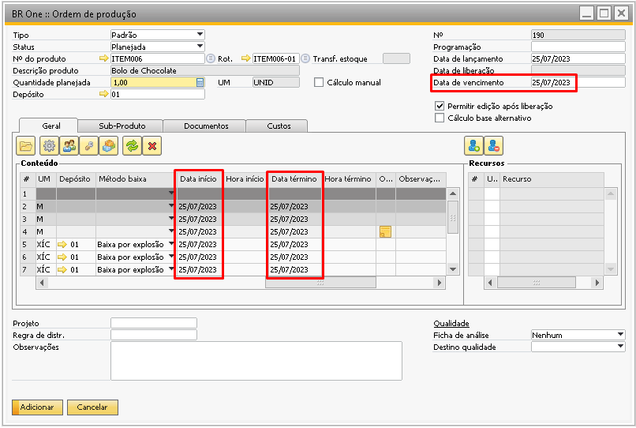
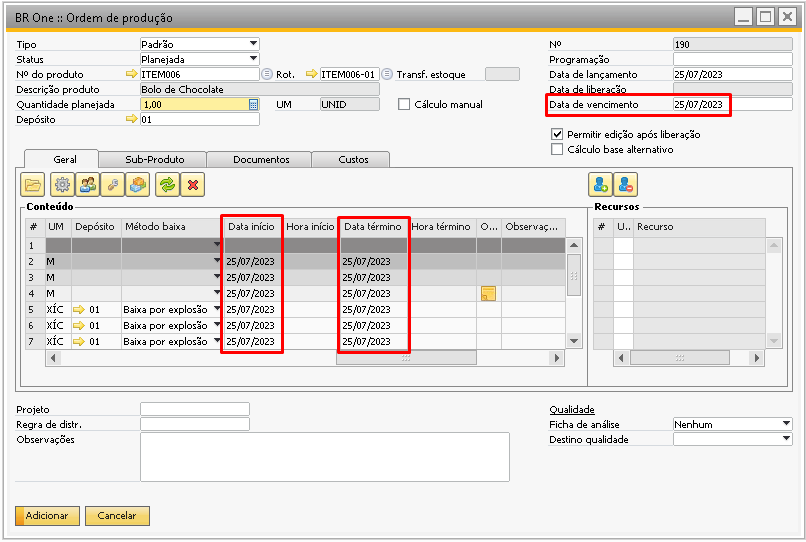

Detalhes - Aba Geral
A aba Geral possui funcionamento semelhante ao da tela de Cadastro de roteiro, porém na tela de ordem de produção é possível escolher os recursos a serem utilizados. Para adicionar ou eliminar um recurso é possível por meio dos botões incluir recurso ou eliminar recurso.
{kind=link}
{kind=link}
{kind=link}
Sempre nesta parte lateral direita será carregado o recurso padrão do grupo de recursos selecionado e caso o grupo de recurso não tenha nenhum recurso padrão nenhum recurso será carregado.
{kind=link}
Ao incluir um novo recurso na OP, a opção Utiliz. Sempre virá marcada como padrão, os recursos que estiverem com esta opção selecionada aparecerão na tela de apontamento para serem apontadas e as opções que estiverem desmarcadas não aparecerão para apontamento.
{kind=link}
{kind=link}
{kind=link}
Para conseguir liberar uma OP, é necessário que todos os recursos vinculados a ela estejam com o campo Status Ativo, caso contrário aparecerá um erro informando qual recurso está inativo ou em manutenção para que ele seja ativado ou removido da OP.
{kind=link}
Quando a flag Permitir edição após liberação estiver marcada, poderão ser adicionados recursos em operações já existentes mesmo com a OP já liberada. Só poderão ser removidos recursos quando a OP estiver com o status Planejada. Caso tente eliminar algum recurso com a OP liberada receberá a mensagem abaixo:
{kind=link}
BR One :: Não é permitido remover recursos já existentes na OP.
Para que seja possível editar as linhas de uma OP será utilizado os botões abaixo, segue a explicação sobre cada um deles:
{kind=link}
{kind=link}
Operação
A Operação na ordem de produção tem a finalidade de separar as etapas do processo de produção. Quando uma operação está sendo inserida na OP é aberta a tela abaixo pedindo que defina a sequência da operação:
{kind=link}
Como as vezes é necessário inserir uma operação no meio de uma sequência de operação já criada, o aconselhado é deixar um intervalo entre as operações como no exemplo abaixo:
Esta ordem de produção possui as operações:
10 - Cortar
20 – Colar
30 – Montar
{kind=link}
Com a estrutura acima, caso seja necessário inserir uma operação entre estas operações 10 e 20 será possível (desde que a OP esteja com o status planejada).
{kind=link}
Caso a OP esteja liberada e a opção Permitir edição após liberação estiver selecionada é possível adicionar uma nova operação somete após a última já cadastrada. Neste caso, a sequência deve ser maior que 30. E caso a opção Permitir edição após liberação estiver desmarcada e o usuário tente adicionar uma nova operação a seguinte mensagem irá aparecer:
{kind=link}
BR One :: Ação permitida apenas quando a Ordem de Produção está no status Planejada.
 Máquina: Utilize este botão para escolher um grupo de recursos do tipo máquina.
Máquina: Utilize este botão para escolher um grupo de recursos do tipo máquina.
Mão-de-obra: Utilize este botão para escolher um grupo de recursos do tipo mão-de-obra.
Ferramenta: Utilize este botão para escolher um grupo de recursos do tipo ferramenta.
{kind=link}
Ao selecionar um dos botões acima abrirá a tela para a escolha do grupo de recurso, mas caso tenha clicado por exemplo em máquina por engano e o que gostaria de escolher era ferramenta, o tipo de recurso a ser escolhido pode ser escolhido no campo Tipo.
{kind=link}
{kind=link}
Componente: Com este botão é possível inserir os componentes na estrutura da OP. Para isso é necessário clicar em alguma linha da OP para indicar dentro de qual operação este componente será adicionado. Ao selecionar a posição onde o componente será adicionado, caso o usuário clique para selecionar um componente da lista, apenas serão listados os 100 primeiros componentes.

Caso o usuário queira ver a lista completa de componentes ele pode colocar um asterisco (*) no campo Código e clicar novamente no campo de lista. É possível também digitar o código do componente e dar um Ok ou digitar o início do código do item e apertar a tecla Tab para que o sistema liste os componentes que começam com os caracteres digitados.
{kind=link}
Alterar grupo: Este botão é utilizado para alterar a informação de alguma linha por outra do mesmo tipo, seja grupo de recurso ou componente. As linhas de operação não podem ser alteradas.
{kind=link}
{kind=link}
Eliminar linha: Este botão é utilizado para eliminar alguma linha da OP. As operações também podem ser removidas, porém ao remover uma operação todas as linhas dentro dela também serão eliminadas.
{kind=link}
{kind=link}
A parte do conteúdo da OP mostrará as linhas da ordem de produção onde estarão separadas por operação, e dentro de cada operação as linhas de grupo de recursos e componentes.
{kind=link}
Para que o usuário consiga adicionar o mesmo componente em mais de uma linha na mesma operação é necessário que o parâmetro Permitir duplicar componentes na mesma operação (OP/Roteiro) da aba Geral das configurações de produção esteja selecionado, caso contrário o usuário receberá a mensagem abaixo impedindo de adicionar o componente:
{kind=link}
BR One :: Grupo já existente e não pode ser duplicado.
Não é permitido que o usuário adicione nas linhas da OP o item do cabeçalho da OP, caso o usuário tente este processo receberá a mensagem abaixo impedindo de adicionar o componente:

{kind=link}
BR One :: Não é permitido incluir nas linhas o mesmo item informado no cabeçalho.
Para as linhas de componentes é obrigatório informar pelo menos uma das colunas Qtd.base ou Qtd.fixa.
{kind=link}
Colunas de Quantidade:
Campo Qtd.base : (Qtd. planejada – Qtd. fixa) / Qtde. Planejada do Cabeçalho.
Como é possível notar na imagem abaixo para a produção de 1 Bolo de chocolate (quantidade cabeçalho) será utilizado 3 ovos.
{kind=link}
Então ao selecionar o roteiro na OP, o componente ovo terá o campo Qtd.base preenchido com 3, pois são necessários 3 ovos para 1 bolo.
{kind=link}
Caso a quantidade no cabeçalho do roteiro seja alterada para 3, entende-se que para a produção de 3 bolos de chocolate utilizam-se 3 ovos, sendo então 1 ovo para cada bolo. Ao abrir o roteiro novamente na OP o campo Qtde. base será preenchido com 1.
{kind=link}
Isso porque o campo Qtd. Base é sempre o valor base para a produção de um item. O valor já proporcional para um bolo, um item. Notem que as outras linhas também são divididas proporcionalmente.
Quando no cabeçalho da OP alteramos o campo Quantidade planejada, isso é, quantos bolos aquela ordem de produção vai produzir, o campo quantidade base será a mesma.
{kind=link}
Campo Qtd.fixa: No campo Qtde. fixa devem ser setados quantidades fixas para o componente. Independente da quantidade total do componente, essa quantidade fixa sempre será somada ao total. Por exemplo, se a quantidade do item do cabeçalho for 1, a quantidade do componente X na linha do roteiro for 1 e a quantidade fixa for 12, o total do componente será (1 x 1) + 12 = 13, totalizando a quantidade.
Caso o campo Qtd. Fixa seja preenchido nas linhas do roteiro, essa mesma quantidade será levada para a ordem de produção.
{kind=link}
Qtd. Planejada: ((Qtd. base / Qtde do Roteiro) * Qtde. Planejada do Cabeçalho) + Qtd. fixa.
A coluna de quantidade planejada sempre vai acompanhar a quantidade planejada no cabeçalho da OP, então ao alterar a quantidade planejada do cabeçalho o sistema refaz o cálculo e atualiza a coluna.
Note o exemplo abaixo, se a quantidade planejada para a OP é 25 bolos, e para cada bolo é consumido 1 ovo (Qtd.base) então para 25 bolos a quantidade planejada para o consumo do componente é 25.
{kind=link}
Ou seguido outro exemplo, se para a produção de 25 bolos é utilizado 0,67 de farinha de trigo, logo para 25 bolos será a quantidade multiplicado por 25, então 0,67 * 25 = 16,75, esta é a quantidade planejada de consumo para este componente. Caso houvesse alguma quantidade fixa na linha do componente, essa quantidade seria somada aos 16,75.
{kind=link}
Os cálculos de quantidade serão realizados apenas se o grupo de recurso da linha for igual a Componentes. Para as demais linhas de recursos as quantidades não serão alteradas.
Colunas de Tempo
Ao inserir manualmente valores na coluna Tempo fixo ou Tempo variável, será atualizado o valor da coluna Tempo planejado, de acordo com a fórmula: Tempo variável * Qtde. Plan. Cabeçalho + Tempo fixo.
Lembrando que a unidade de medida do tempo é definida nas configurações de produção.

Conforme é possível ver abaixo, o tempo planejado foi preenchido com 37 pois é o resultado do cálculo do tempo planejado: 12 * 3 + 1 = 37.
{kind=link}
As colunas de tempo também são preenchidas na OP com base no roteiro. Na coluna tempo fixo será carregada exatamente a mesma quantidade preenchida para a linha do grupo de recurso no roteiro, porém a linha de tempo variável é proporcional, isso é, se para produzir 3 bolos e o tempo variável é 12, então para produzir 1 bolo a quantidade será 4.
{kind=link}
As colunas de tempo também são preenchidas na OP com base no roteiro. Na coluna tempo fixo será carregada exatamente a mesma quantidade preenchida para a linha do grupo de recurso no roteiro, porém a linha de tempo variável é proporcional, isso é, se para produzir 3 bolos e o tempo variável é 12, então para produzir 1 bolo a quantidade será 4.
{kind=link}
O calculo para encontrar o tempo planejado foi fórmula: ((Tempo variável / Qtde do Roteiro) * Qtde. Plan. Cabeçalho) + Tempo fixo.
((12 / 3) * 20) + 1 = 81
Esses cálculos de tempo serão realizados apenas se o grupo de recurso da linha for igual à Máquina, Mão-de-obra ou Ferramentas.
Coluna UM: Esta coluna sempre será preenchida com a unidade de medida de estoque e esta informação não pode ser alterada pelo usuário.
{kind=link}
Coluna Depósito: Trará sempre o depósito padrão do item ao adicionar um componente na ordem de produção, mas esta informação pode ser alterada pelo usuário. Este campo será utilizado para indicar em qual depósito será realizada a saída do insumo. Quando a base for multi-filial, o depósito das linhas deve pertencer a mesma filial do depósito do cabeçalho
{kind=link}
Caso o parâmetro Bloquear alteração da coluna depósito estiver desmarcado o usuário conseguirá alterar o depósito na tela de saída de insumo.
{kind=link}
Método de baixa
É possível configurar um método de baixa padrão para que ele seja levado quando o componente for adicionado na OP. Essa configuração é definida no campo Método de baixa da aba Dados de produção do cadastro do item, mas ao adicionar o componente na OP essa informação pode ser alterada manualmente.
{kind=link}
Quando o método de baixa está definido para o componente na OP como Baixa por explosão ao realizar a entrada de PA o sistema irá realizar a saída do insumo automaticamente sem que a tela de saída de insumos apareça para o usuário.
Quando o método de baixa está configurado como Manual ao realizar a entrada de PA o sistema não realiza a baixa dos insumos, sendo necessário que o usuário realize a saída dos insumos manualmente.
{kind=link}
Se o componente for um item controlado por série, o método de baixa tem que ser obrigatoriamente o Manual. Caso o usuário selecione o método Baixa por explosão seja no cadastro do Item ou dentro da OP, a seguinte mensagem será exibida:
{kind=link}
BR One :: Baixa manual deve ser o método de saída para itens que são administrados por série.
Campos de data
Para o cálculo das datas de início e fim das linhas da OP, são consideradas algumas regras:
Se a operação que só possuir componentes for a última operação, então os componentes terão a data igual ao vencimento da OP menos 1 dia.

Se a operação que só possuir componentes estiver antes de uma operação que possui recurso, então a data calculada para data início da operação seguinte será a data inicial e final dos componentes da operação que só possuir componentes.
{kind=link}
Para as operações que só possuírem componentes, poderá acontecer de a data calculada cair em um dia não trabalhável. Isso acontecerá porque o calendário de produção é configurado nos recursos, e como a operação não possui recursos, então não é considerado nenhum calendário. Será preciso uma atenção especial para o usuário que programar as OPs em operações que só possuírem componentes para evitar esse tipo de problema.
Caso o campo Cálculo manual estiver marcado em uma OP com status Liberada os campos data e hora poderão ser alterados.
Se no cadastro do item do cabeçalho o campo Leadtime for 0 ou vazio e o Leadtime preferencial for Fixo em dias, a data de início e de término será igual a data de vencimento.
 

{kind=link}
Caso o campo Cálculo manual no cabeçalho da OP não estiver marcado, a quantidade planejada, tempo planejado, hora de início e término sempre serão calculados como as datas nas linhas de acordo com a data de vencimento da OP, antes de cada adição ou atualização de OP.
{kind=link}
Se uma OP for duplicada, caso os dados da grid sejam diferentes ao conteúdo do roteiro, ao duplicar, esses dados não serão alterados, apenas se o roteiro for modificado.
Campos de Observação.
É possível adicionar observações em todos os tipos de linhas da OP dando duplo clique na linha desejada. Na coluna Observação ao adicionar alguma informação ela passará a mostrar um ícone de imagem, indicando que ali existe uma observação, já na coluna Observação 2 a informação adicionada fica visível diretamente na linha.
{kind=link}
Cancelado
A coluna Cancelado, é onde o usuário poderá indicar o cancelamento de recursos.
{kind=link}
Desc. leadtime
A coluna Desc. leadtime foi inserida nas linhas da OP. Essa coluna tem a finalidade de determinar quais operações serão consideradas nos cálculos de datas no Assistente de MRP. Ou seja, se uma operação tiver o seu Cálculo de LeadTime Desconsiderado, ela assumirá as datas da operação anterior, ou das seguintes, se as primeiras operações forem desconsideradas nos cálculos, portanto, será uma operação que ocorre paralelamente a outra operação. Essa informação poderá ser configurada no cadastro da Operação e poderá ser alterada tanto no Roteiro quanto na Ordem de Produção.
{kind=link}
Mod. Análise
Caso no rodapé da Ordem de Produção o campo Ficha de análise estiver com as opções Operação ou Produto acabado e Operação é possível selecionar um modelo de análise para as linhas de Operação existentes na OP e na liberação da Ordem de produção a ficha de análise para a Operação será criada.
{kind=link}
Não permitir alteração do status da OP de “liberado” para “planejada”.
Ao Liberar uma OP e realizar um Pedido de transferência ou Transferência de estoque o add-on não permite, que volte para o status planejado